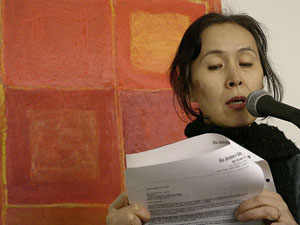

Jester-Knight
Literature
Film
Music
Visual Art
Tributes
Submissions
Links
Contact
Yuko Otomo

Photograph by Marilyn Kaggen
Biography
Japanese origin. A visual artist & a bilingual poet (poetry & haiku). She also writes art criticism, essays & does translation. In visual art, she has been concentrating herself on the study of “pure abstraction” & has created a body of work covering over 3 decades. Her work has been shown in various gallery spaces; such as Tribes Gallery, Anthology Film Archives Courthouse Gallery, ABC No Rio, Brecht Forum, Gallery 128, Knitting Factory & Vision Festival. As a poet/writer, she has read her work in venues such as St. Marks’s Poetry Project, Bowery Poetry Club, Tonic, The Stone, Knitting Factory, NY Public Library, Issue Project Room, Brooklyn Botanic Garden, Nest, Pink Pony, Nuyorican Poet’s Café etc. She also has read in Germany, France & Japan. She has been published in many magazines & literary publications such as Recluse, 6x6, Long Shot, Appearances, The Unbearables Assemblage Magazine, Downtown Anthology, Senritsu & others. Her books include “ Garden: Selected Haiku” (Beehive Press), “Small Poems”, “The Hand of the Poet” (by Ugly Duckling Presse), “Cornell box Poems”, “Genesis”, “ Fragile” (by Sisyphus Press). She also has a huge volume of critical writing on art such as “On Artist & Studio”, “On Artuad: Writing & Drawing”, Henri Michaux: Untitled Passage”, “Vermeer & the Deft School”, “ Being as an academician versus being an intellectual”, “Victor Hugo” & etc.
Click below for Yuko's work
Poems (.pdf)
A Sunday Afternoon on the Isle of Museum (.pdf)